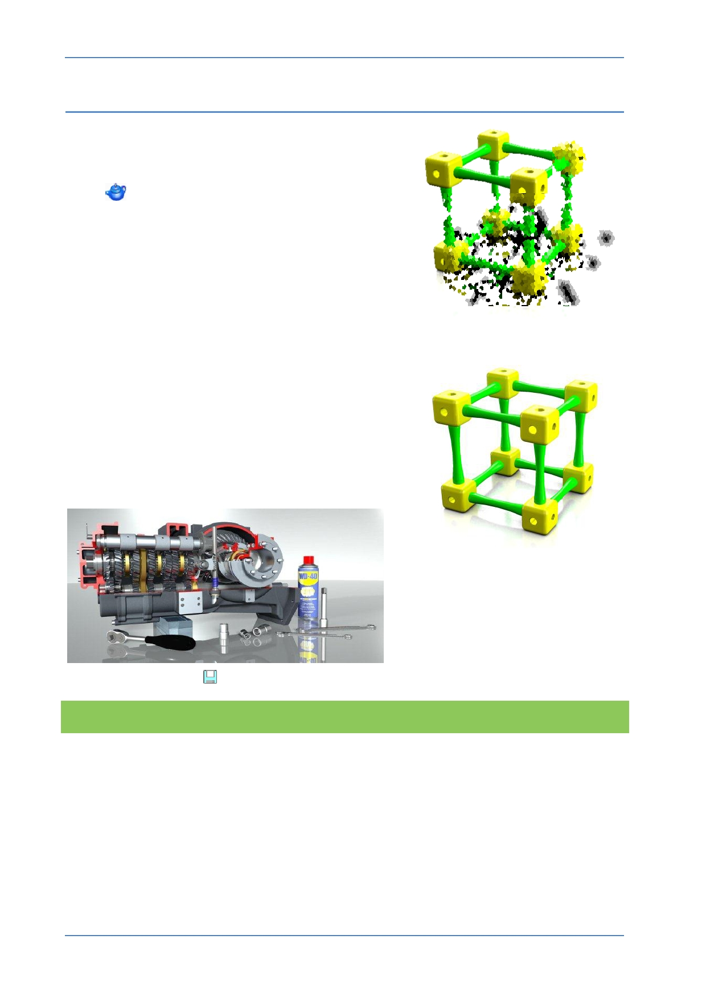

PTC Academic Program
Step 5: Final render
1. Final render
Make sure your model is in the right position.
In the Render tab, click on Render Window
to perform the final render.
The render may take some time especially on
slower computers. Creo Parametric is doing a great
deal of mathematical calculation to work out light
paths, shadows and multiple reflections.
During the render process you may see the
resolution improve a section at a time. This is a
clue to the mathematical algorithms and iterative
calculations being carried out.
The final render should look quite realistic even with
the default settings.
The level of realism is only limited by the users
understanding of space, form, light, texture, and
how to adjust the settings in Creo Parametric.
In the example below, additional objects have been
added to create a context for the gearbox adding
greatly to the realism of the scene.
2. Click Save
to save your work.
What have you learned?
Final render.
Setting the context for render.
© 2012 PTC
Creo Parametric 2.0 Primer
Page 88